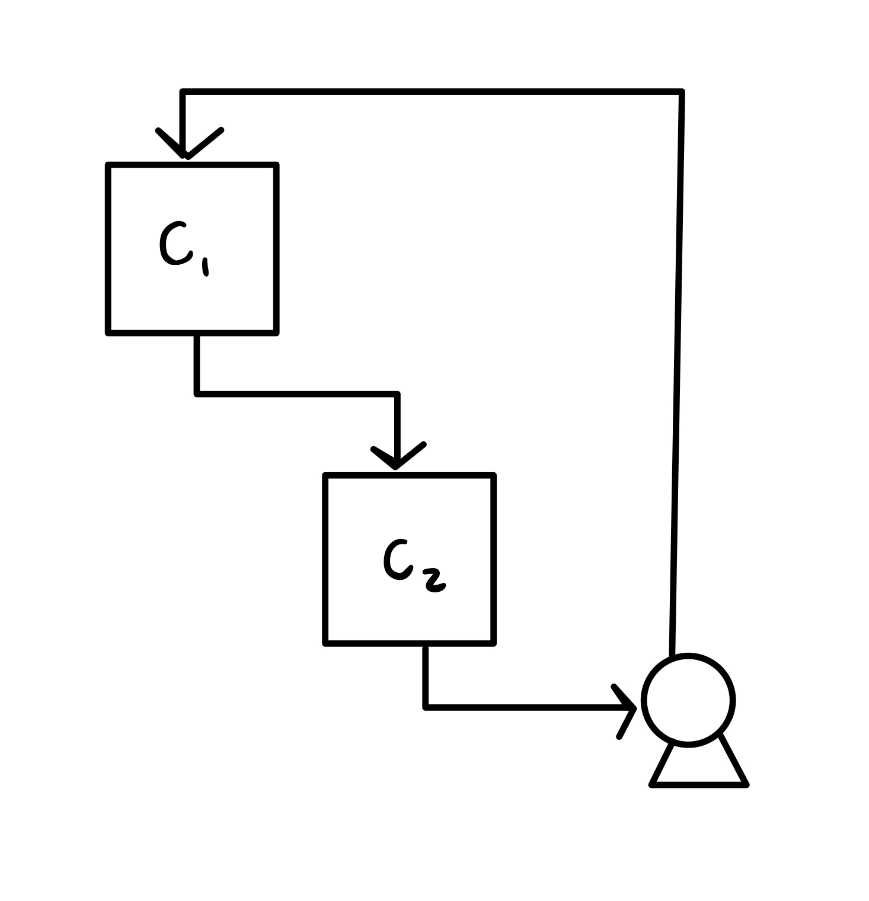

6.1. Definition#
Many dynamic processes can occur simultaneously, giving more than one ODE. For example, consider two tanks. Tank 1 has concentration \(c_1\) of a solute and Tank 2 has concentration \(c_2\). Tank 1 flows into Tank 2, which is then passed through a pump and recycled back to Tank 1.
{kind=link}
Eventually, the two concentrations should equalize, but how do they evolve to over time? \(c_1\) and \(c_2\) can be modeled using unsteady mass balances. This is a system of first-order ODEs that can be solved simultaneously.
The general, explicit form of a system of first-order ODEs is:
where t is the independent variable, \((y_1, \cdots, y_n)\) are the n dependent variables, and \((f_1, \cdots, f_n)\) are the n right-hand side functions of the n ODEs. We will notate this system more compactly using vectors
where y is the column vector of dependent variables, f is the column vector of right-hand side functions, and \(\vv{y}'\) is a shorthand for the column vector of first derivatives of all dependent variables.
6.1.1. Successive substitution#
Some systems of first-order ODEs have a special structure that allows you to solve one equation at a time, then substitute into another that can now be solved. This process can be repeated successively to solve for all dependent variables.
Example: Reaction network
We are analyzing a simple reaction sequence occuring in a batch reactor:
where \(k_1\) and \(k_2\) are reaction rate constants. At \(t = 0\), only species A is present at concentration \(c_{{\rm A},0}\). Determine the concentration of B as a function of time. What happens in the special case \(k_1 = k_2\)?
Unsteady mole balances give
These ODES can be solved by first finding \(c_{\rm A}\), then \(c_{\rm B}\), and last \(c_{\rm C}\)! The ODE for \(c_{\rm A}\) is separable:
Applying the initial condition \(c_{\rm A}(0) = c_{{\rm A},0}\) gives:
Next, use the solution for \(c_{\rm A}\) to solve \(c_{\rm B}\):
This is a linear first-order ODE with
that can be solved using an integrating factor:
Hence,
Applying the initial condition
Hence,
If \(k_1 = k_2\), the solution appears to have an issue because there is a “divide by zero”. However, we can actually evaluate this behavior as a limit! Let’s set \(k_1 = k\), and take the limit as \(k_2 \to k\):
where in the second line, we made use of L’Hopital’s rule to evaluate the limit.
6.1.2. Skill builder problems#
Solve the IVP
(6.14)#\[\begin{align} y_1' &= 1-2y_1, & y_1(0) &= 0\\ y_2' &= 2y_1 - y_1y_2, & y_2(0) &= 0 \end{align}\]Solution
We begin by solving for \(y_1\) in terms of x. The ODE is separable and therefore can be solved using separation of variables.
(6.15)#\[\begin{align} \int \frac{dy_1}{1-2y_1} &= \int dx \\ -\frac{1}{2} \ln{\left(1-2y_1\right)} &= x + c_0 \\ \ln{\left(1-2y_1\right)} &= -2x + c_1 \\ 1 - 2y_1 &= c_2 e^{-2x} \\ y_1 &= \frac{1}{2} \left(1- c_2 e^{-2x}\right) \\ \end{align}\]Now, use the initial condition \(y_1(0)= 0\) to solve for \(c_2\):
(6.16)#\[\begin{equation} y_1(0) = \frac{1}{2}\left(1-c_2\right) = 0 \end{equation}\]so \(c_2 = 1\) and
(6.17)#\[\begin{equation} y_1 = \frac{1}{2} \left(1-e^{-2x}\right) \end{equation}\]Now, we can solve for \(y_2\) knowing \(y_1\) and recognizing that \(y_2\) can also be solved via separation of variables
(6.18)#\[\begin{align} y_2' &= y_1\left(2-y_2\right) \\ \int \frac{dy_2}{2-y_2} &= \int \frac{1}{2}\left(1-e^{-2x}\right) \d{x} \\ -\ln{\left(2-y_2\right)} &= \frac{1}{2}\left(x + \frac{1}{2}e^{-2x}\right) + c_0\\ 2 - y_2 &= c_1 \exp\left[-\frac{1}{2}\left(x+ \frac{1}{2}e^{-2x}\right)\right] \\ y_2 &= 2 - c_1 \exp\left[-\frac{1}{2}\left(x+\frac{1}{2}e^{-2x}\right)\right] \\ \end{align}\]Again, use the initial condition \(y_2(0)= 0\) to solve for \(c_1\):
(6.19)#\[\begin{align} y_2(0) &= 2 - c_1 e^{-1/4} = 0 \\ c_1 &= 2e^{1/4} \end{align}\]Therefore,
(6.20)#\[\begin{equation} y_2 = 2\left[1-\exp\left(\frac{1}{4}-\frac{x}{2}-\frac{1}{4}e^{-2x}\right)\right] \end{equation}\]